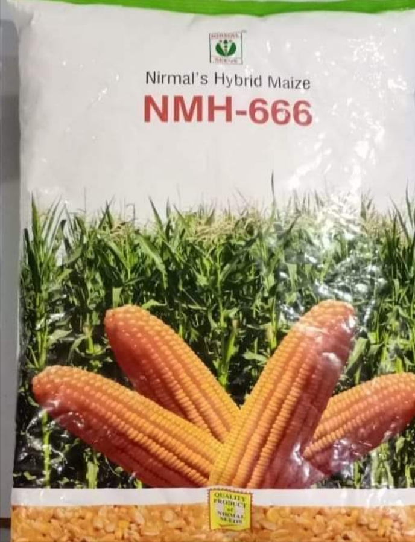

DESCREPTION
Characteristics.
Crop Maturity
*Kharif = 120-125 days
*Rabi Bihar =
150-155 days
*Rabi Rest of India = 130-135 days
Special Features
*High Shelling percentage 84-85%
*High grain weight
*Cylindrical and Uniform Cobs
*Good tip filling
*Attractive grain color
*Stay green till harvest
*Semident grain type
Rs.300